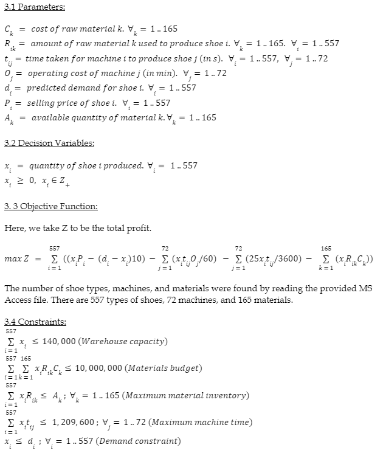

Optimizing a production schedule
A look into maximizing profit of a shoe manufacturer

An Abstract
The idea and purpose of this projects stems from a case study presented to me in my coursework at University. The case study details WARP Shoe Company, a shoe manifacturing company, that aims to maximize their profit at their end-of-month sale in February.
A short introduction
WARP shoe company is an established shoe manufacturer and retailer in Canada. At the beginning of 2006, one of WARP’s major market competitors of WARP went bankrupt. With a closing inventory in January of 0 shoes; WARP management seeks to take advantage of the market disruption and optimize their profit at their shoe sale at the end of February.
Key points
In order to successfully maximize their profit; the management provided vital information to consider when formulating an optimal solution.
Additional information such as shoe prices, historical demand, raw material costs and quantity, operating costs etc have been provided in a Microsoft Access database.
Given the provided information, a problem formulation was devised (see below).
The problem formulation was programmed into AMPL, where an optimized production plan was found.
Results
Using AMPL, the problem formulation was implemented to obtain the optimal production plan to maximize WARPs’ profit. This production plan can be found in the case study report linked at the end of this article. With the provided production plan, it is of firm belief that WARP may be able to obtain a maximum profit of $13,046,000 by the end of February